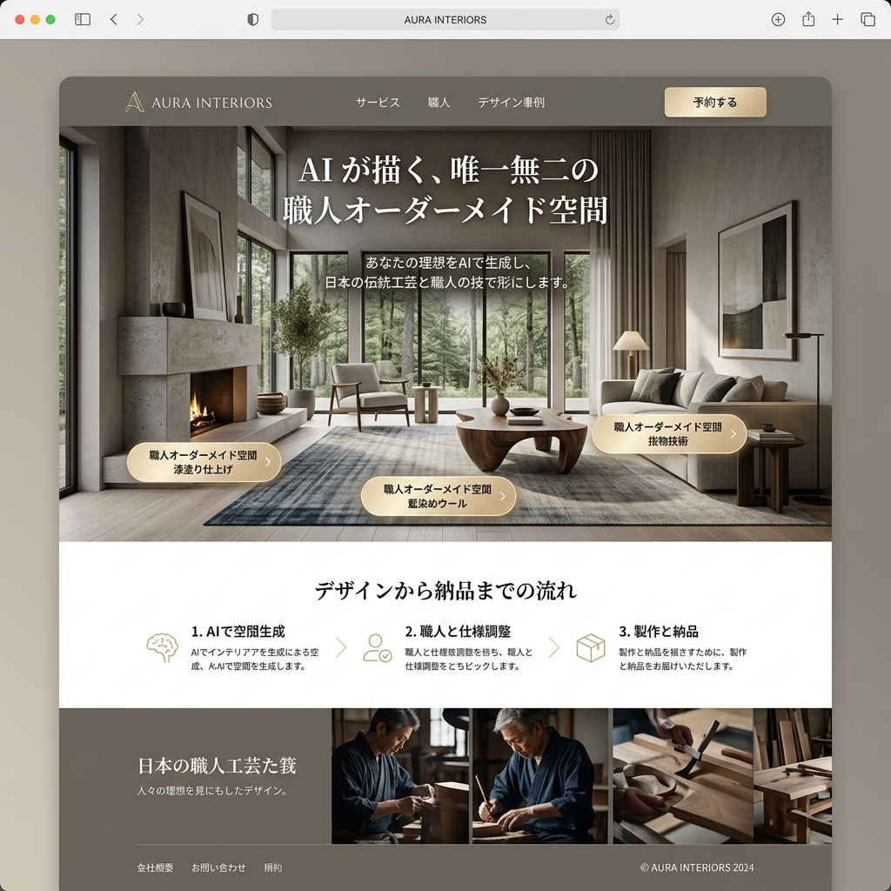

オフィス空間が、
社員の行動を「デザイン」する。
「イノベーションを起こせ」と叫ぶより、コーヒーマシンの位置を変える方が効果的です。SPACE-NUDGEは、行動経済学と空間IoTを掛け合わせ、社員の自然なコミュニケーションや集中力を無意識に誘導する次世代ファシリティ・デザインツール。

「コミュニケーション不足」への間違った処方箋
部署間の連携が悪い時、多くの企業は「社内イベント」や「オンライン飲み会」を企画します。しかし、無理に作られた交流は疲労を生むだけです。本当に必要なのは、日常の導線上に仕組まれた「意図的な摩擦（セレンディピティ）」なのです。
行動を促す「ナッジ」の空間実装
マグネット・スペースの最適配置
コピー機、ゴミ箱、ウォーターサーバー。社員が必ず立ち寄る「マグネット」の配置をAIがシミュレーションし、異なる部署の人間が偶然すれ違う確率を最大化します。
集中力をコントロールする環境制御
時間帯やエリアの用途に合わせて、照明の色温度（ケルビン）やBGMのBPMを自動変化。クリエイティブなブレストには暖色と環境音を、深い集中には寒色とホワイトノイズを提供。
経路依存性の破壊（ルート・ランダマイズ）
IoTセンサーで「特定の社員が毎日同じルートしか通っていない」ことを検知。アプリを通じて「今日はA階段を使うとコーヒーが無料」といった通知を出し、新しい出会いを誘発します。
「誰が誰と話しているか」の組織ネットワーク可視化
社員証に内蔵されたビーコンやWi-Fiの接続ログから、実際の社内の人間関係（インフォーマル・ネットワーク）を可視化。「営業部と開発部の結節点になっているキーパーソン」や「孤立している新入社員」を特定し、人事評価やフォローアップに活かします。
A/Bテストで進化し続けるオフィス
オフィスは作って終わりではありません。「ソファを向かい合わせにした場合」と「窓に向けた場合」で、どちらが会話の発生率が高いか。SPACE-NUDGEは、WebサイトのUI改善のように、オフィスレイアウトのA/Bテストをデータ駆動で実行します。
Case Study | 大手広告代理店
部門間のサイロ化に悩んでいた企業。SPACE-NUDGEの分析により、1階のカフェスペースが特定の部署にしか使われていないことが判明。全フロアの郵便受けをカフェ横に集約し、導線を再設計した結果、他部署間の雑談が月間300%増加し、そこから3つの新規プロジェクトが誕生しました。
空間は、無言のメッセージである
企業文化は、壁に貼られたスローガンではなく、毎日の環境によって作られます。私たちは空間デザインを通じて、人間のクリエイティビティと幸福度を無意識のうちにハックします。